주제 4 · 5~6차시
집기 시퀀스
“집어서 옮겨라” 한 문장을 로봇이 할 수 있는 동작 단계로 쪼갠다
실제 구분 차시보다 많은 시간이 소요될 수 있음.
오늘의 집기 명령어 명령어
# ── 지금까지 배운 명령 ── move_to(x, y, z, 속도) # 집게 끝을 그 좌표로 (주제 3) wait(ms) # 잠깐 기다리기 (주제 2) # ── 오늘 새로 배우는 명령 ── open_gripper() # 집게 열기 — 명령은 즉시 돌아온다 close_gripper() # 집게 닫기 — 닫히는 데는 시간이 걸린다 (중요!)
이동은 — move_to 로 어디든 보낼 수 있다.
오늘것은 집게 두 개의 명령어를 새로 익힌다.
괄호 안 주석의 “시간이 걸린다” 는 어떤 의미일까?
[참고] 전체 명령 표는 RaccoonBot_Python_Manual.md
완성 코드 실행해보기 실습 1 · 그대로 실행
from roboid import * raccoon = Raccoon() raccoon.open_gripper() raccoon.move_to(-16, 16, 10) # A3 위 10cm 로 raccoon.move_to(-16, 16, 1.5, 40) # 집는 높이로 하강 raccoon.close_gripper() wait(700) # 집게가 닫힐 시간 raccoon.move_to(-16, 16, 10, 60) # 들어 올리기 raccoon.beep() # “삑” = 집었다 raccoon.move_to(0, 16, 10) # E3 위로 이동 raccoon.move_to(0, 16, 1.5, 40) # 내려놓는 높이 raccoon.open_gripper() wait(500) raccoon.beep() # “삑” = 놓았다 raccoon.degree_to(0, -10, -140, 60) # Home raccoon.dispose()
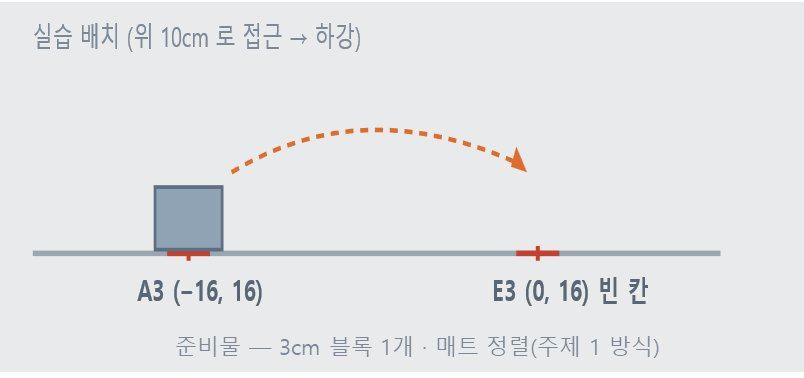
A3 칸의 블록을 집어 E3 칸으로 옮기는 완성코드이다.
3cm 블록을 A3 십자에 세우고 그대로 실행해 봅시다.
오늘의 질문 “이러한 코드를 어떻게 설계하는가?”
줄마다 이상한 숫자가 하나씩 적혀 있다 — 1.5, 700, 10, 40…
다른 칸으로 옮기기 [미션] 칸만 바꿔서
A3 → I3 (반대편 끝, x = +16)
내가 고른 칸 → 그 옆 칸
두 번 연속 — A3 → E3 → I3
① 한 번에
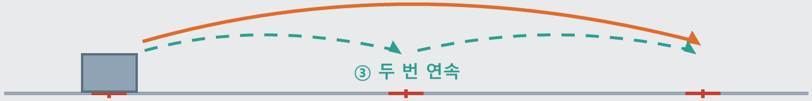
A3 (−16, 16)
E3 (0, 16)
I3 (+16, 16)
배치 — 블록 1개를 A3 십자에 · ②는 내가 고른 칸에서 시작
실습 1 의 완성 코드에서 바꾸는 것은 좌표의 x, y 뿐이다. 작업지도의 눈금을 읽는다.
가로 A~I = x −16 … +16 (4cm 간격) · 세로 1~4 = y 8 … 20
하강 높이 1.5 와 wait(700) 은 아직 건드리지 않는다.
[기록해두기]
실패한 칸 조합이 있으면 기록해두기 — 어느 칸에서, 어느 단계에서 멈췄는지
한 줄 바꿔 고장내기 [미션] 시행착오로 배우기
from roboid import * raccoon = Raccoon() raccoon.open_gripper() ③ raccoon.move_to(-16, 16, 10) # A3 위 10cm 로 ② raccoon.move_to(-16, 16, 1.5, 40)# 집는 높이로 하강 raccoon.close_gripper() ① wait(700) # 집게가 닫힐 시간 raccoon.move_to(-16, 16, 10, 60)# 들어 올리기 raccoon.beep() raccoon.move_to(0, 16, 10) # E3 위로 이동 raccoon.move_to(0, 16, 1.5, 40) # 내려놓는 높이 raccoon.open_gripper() wait(500) raccoon.beep() raccoon.degree_to(0, -10, -140, 60) # Home raccoon.dispose()
| 변형 (한 번에 하나만) | 내 예상 | 실제 |
|---|---|---|
| ① 그 줄을 지운다 | ||
| ② 1.5 를 3.0 으로 | ||
| ③ 그 줄을 지운다 (바로 하강) |
①②③ 코드를 바꿨을 때 어떻게 동작이 바뀔까?
바꾸기 전에 예상을 문장으로 적는다
— “못 집을 것이다” 가 아니라
“어느 단계에서, 어떤 모습으로” 까지.
(블록이 쓰러지면 다시 세우고 실습하기)
왜 하필 이 숫자들일까? 생각해보기
완성 코드는 잘 돌았다. 칸을 바꿔도 돌았다.
그런데 코드 한 줄을 건드리자 무너졌다 — 심지어 수정한 줄마다 다른 방식으로 오류가 발생했다
줄 하나하나가 특정한 실패 하나씩을 예방하고 있었다는 뜻이다.
이 코드 안에는 여섯 단계가 있고, 단계마다 이유 있는 숫자가 있다 — 1.5, 700, hover 10, 그리고 줄의 순서.
오늘은 숫자가 미치는 영향을 찾아보자
여섯 단계
“집어서 옮겨라” — 사람에게는 한 문장, 로봇에게는 아홉 개의 동작이다.
의미가 같은 동작끼리 묶으면 여섯 단계. 단계마다 정해 줘야 하는 숫자가 하나씩 붙는다.
| 단계 | 하는 일 | 숨어 있는 숫자 |
|---|---|---|
| approach | 집게 열고 → 기울기 잡고 → hover 로 | 기울기, hover 높이 |
| grasp | 집는 높이까지 하강 | GRASP_Z |
| lift | 집고 hover 로 상승 | 집게 대기 시간, 속도 |
| move | 놓을 자리로 이동 | 경로, 기울기 |
| place | 하강 후 집게 열기 | 놓는 높이 |
| rest | 상승 후 Home | — |
쪼개는 이유 — 실패한 지점을 짚을 수 있다.
한 덩어리면 “안 집힌다” 가 전부지만, 단계가 나뉘면 “grasp 에서 높이가 안 맞는다” 고 말할 수 있다.
[실습 코드] 09_grasp_test.py - 단계 별로 확인
왜 이 순서일까? 단계 1 · approach
첫 단계는 세 가지 순서를 꼭 지켜야 한다.
— 집게 열기, 기울기 잡기, hover 로 이동
bot.open_gripper() safe_tilt(bot, alpha) ← 먼저 bot.move_to(x, y, hover)
move_to 는 지금 손목이 향한 방향을 유지한 채 좌표를 계산한다.
기울기를 나중에 잡으면? 도착한 자리에서 손목만 돌리게 된다
— 주제 3에서 본 일이 벌어진다.
1. 그 기울기로는 닿지 않아 거부당하거나
2. 집게 끝이 아래로 호를 그리며 바닥을 긁는다
기울기를 먼저 잡고 움직이면 둘 다 일어나지 않는다.
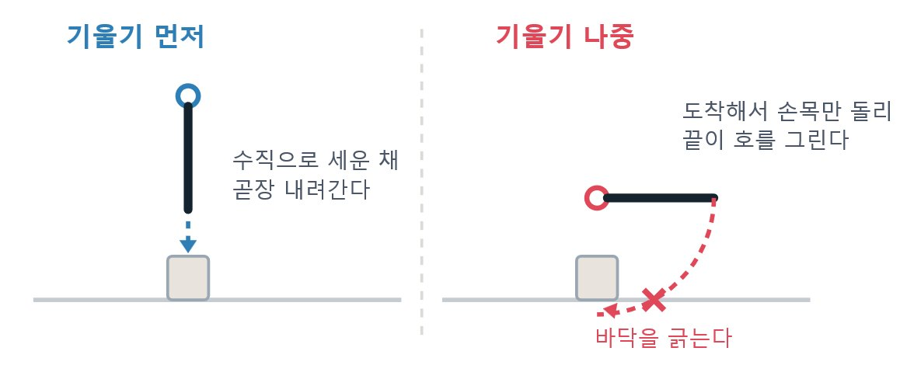
왜 z = 3 이면 못 집을까? 단계 2 · grasp · 실습하다 겪은 일
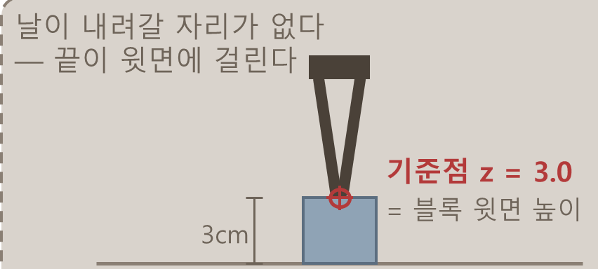
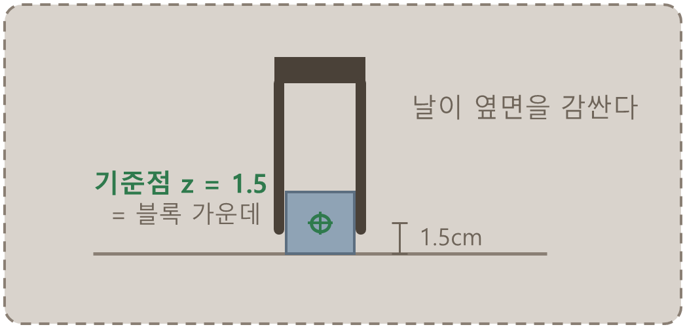
z = 3.0 → 스친다
z = 1.5 → 감싼다
좌표가 가리키는 점 = 닫힌 두 날이 만나는 점이다.
z 에 3 을 주면 그 점이 블록 윗면 높이에 온다 — 날은 블록을 감싸지 못하고 윗면을 스친다.
“3cm 블록이니까 3cm” 가 아니라, 그리퍼 끝점을 기준으로 1~2cm 정도를 더 깊게 들어가야 한다.
낮출수록 좋을까?
그러면 z 를 1.0 까지 낮추면 더 확실하지 않을까?
실제로 1.0 과 1.5 모두 블록은 잡힌다. 그런데? 낮게 내리려면 팔을 더 숙여야 하고, 숙인 팔은 앞으로 덜 뻗는다.
| GRASP_Z | 수평 정면 도달 | A3 36칸 중 | 집힘 |
|---|---|---|---|
| 1.0 cm | 14.95 ~ 25.46 | 34칸 | 잘 집힘 |
| 1.5 cm | 14.78 ~ 25.88 | 36칸 | 집힘 |
| 3.0 cm | 14.07 ~ 26.85 | 36칸 | 못 집음 |
1.0 — 더 확실히 집는 대신, 먼 모서리 A4·I4 두 칸을 잃는다.
3.0 — 36칸 전부 닿지만, 물체를 집지 못한다.
1.5 — 물체를 집으면서 36칸에 모두 도달할 수 있다.
설정값은 물체의 높이와 상황에 따라 적절히 바꿀 수 있다.
왜 wait(700) 일까? 단계 3 · lift
bot.close_gripper() wait(700) ← 이 줄이 없으면 빈손으로 올라간다 bot.move_to(x, y, hover, 60)
close_gripper 를 부르면 명령은 즉시 돌아온다. 그러나 집게는 아직 닫히는 중이다.
다음 줄에서 팔을 올려 버리면 — 블록은 그 자리, 빈 집게만 올라간다.
우리가 잰 값은 700ms. 미끄러지면 시간을 늘리거나 드는 속도를 낮춘다.
보통의 프로그램 — 함수가 돌아오면 그 일은 끝난 것.
로봇은 다르다. 명령을 보낸 것과 끝난 것 사이에 물리적인 시간이 있다.
이 감각이 로봇 프로그래밍의 출발점이다.
왜 바닥을 긁었을까? 실습하다 겪은 일
집게 끝은 손목 축에서 8cm 떨어져 있다.
손목을 제자리에서 돌리면
— 그 8cm 가 반지름인 원을 그리며 끝이 내려온다.
| 기울기 변화 | 하강 | Home 에서 |
|---|---|---|
| 0° → −45° | 5.5 cm | 3.4 cm |
| 0° → −90° | 7.4 cm | 1.4 cm |
그래서 돌리기 전에 팔을 먼저 세운다.
세운 자세에서는 −90°로 돌려도 끝이 8.9cm 높이에 남는다.
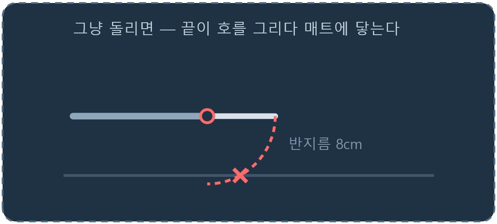
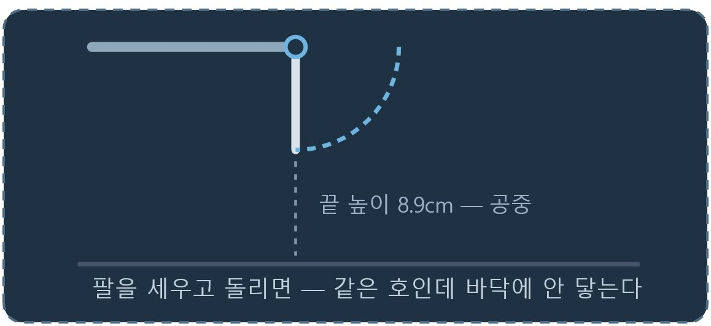
함수로 묶어보기
def 집어_옮기기(집는칸, 놓는칸):
approach(집는칸)
grasp(집는칸)
lift(집는칸)
move(놓는칸)
place(놓는칸)
rest()6개 명령어, 6개의 단계
집는 위치를 바꾸려면 (집는칸) 부분을
집는 높이를 바꾸려면 grasp 함수 속 높이만 바꾸면 된다.
— 실행하면 어느 단계에서 멈췄는지 화면에 찍히고,
수정해야 할 곳을 바로 좁힐 수 있다.
같은 이름, 다른 몸
로봇 없이도 집기 코드를 고쳐보자
RealArm — 진짜 로봇에 명령을 보냄
DummyArm — 화면에 글자만 출력
arm = DummyArm() # _가상 파일 · _실기기 파일은 RealArm() 을 넣는다
arm.pick("A3"); arm.place("E3"); arm.home() ← 코드는 똑같다둘은 같은 이름의 메서드를 가진다.
쓰는 쪽은 지금 어느 팔인지 몰라도 된다
— 로봇 없이 순서부터 확인하고, 다 맞춘 뒤 로봇으로 옮긴다.
왜 굴러떨어졌을까? 6차시 · 실습하다 겪은 일
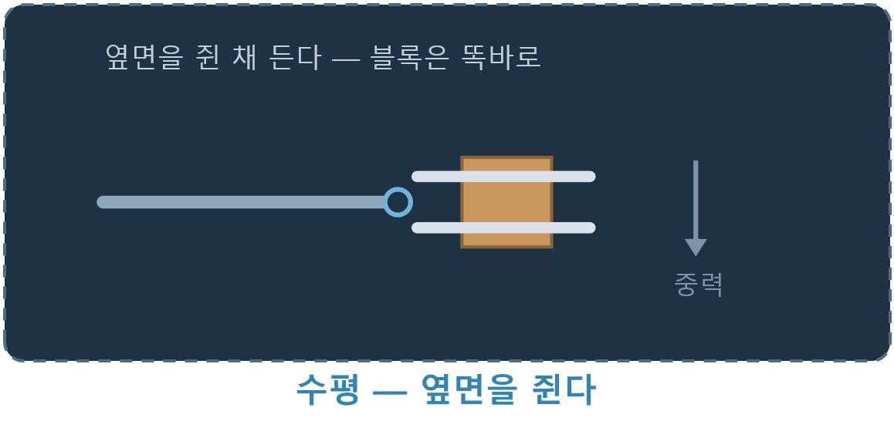
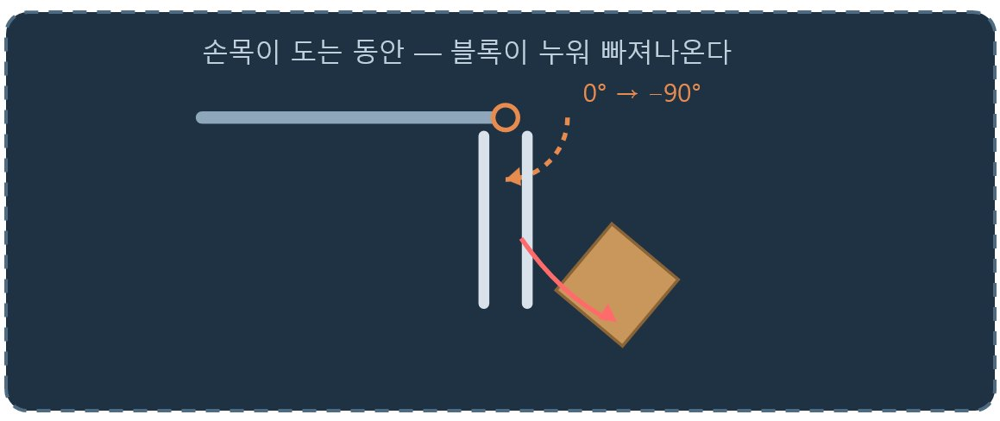
수직 — 눕는다, 굴러 나간다
먼 칸에서 수평으로 집어, 가까운 칸에 수직으로 놓으려 했다.
집는 데까지는 됐다. 그런데 옮기는 도중 손목이 90° 돌면서 — 블록이 같이 누워 집게 사이로 굴러 나갔다.
“팔을 먼저 세운다” 로도 안 된다. 그때는 높이 문제였지만, 지금은 자세의 변화 자체가 문제다.
공통 기울기로 가보기
손목을 돌리는 게 문제라면 — 돌리지 않는 길을 찾으면 된다.
집는 자리와 놓는 자리를 모두 닿는 기울기가 하나라도 있으면, 그걸로 고정하고 전 구간을 간다.
어느 기울기가 얼마나 넓은지는 미리 세어 둘 수 있다.
| 기울기 | A3 36칸 중 닿는 칸 | 쓰임 |
|---|---|---|
| 기울임 −45° | 31칸 | 가장 넓다 — 먼저 본다 |
| 수평 0° | 22칸 | 먼 쪽 |
| 수직 −90° | 21칸 | 가까운 쪽 |
E4 → E2 는 −45° 하나로. E2 → E1 은 −90° 하나로.
매트에 인쇄된 기울기 구역이 서로 달라도 상관없다
※ 각 구역은 집기 “좋은” 기울기이지 “유일한” 기울기가 아니다.
−45° 를 먼저 보는 이유는 가장 많은 칸을 덮기 때문이다
공통 기울기가 없다면?
| 옮기기 | 공통 기울기 | 결과 |
|---|---|---|
| E4 → E2 | −45° | 회전 없이 간다 |
| E2 → E1 | −90° | 회전 없이 간다 |
| A1 → E1 | −90° | 회전 없이 간다 |
| E4 → E1 | 없음 | 옮길 수 없다 |
E4 — 반경 20cm. 수직으로는 안 닿는다 (수직 한계 19.2cm).
E1 — 반경 8cm. 수평으로는 안 닿는다 (수평 한계 14.8cm).
두 칸이 닿는 기울기 목록을 겹치면 — 공통이 하나도 없다.
이 현상은 소프트웨어로 풀 수 없는 제약이다. 코드를 아무리 잘 짜도 E4 의 블록을 E1 으로 못 옮긴다.
그래서 작업 지도를 설계할 때, 집는 자리와 놓는 자리가 공통 기울기를 갖게 미리 배치해야 한다.
09_grasp_test.py 는 공통 기울기가 없으면 움직이기 전에 경고하고 멈춘다.
시도해 보고 실패하는 것과, 시작 전에 알려 주는 것은 다르다
블록만 1cm 옮겨보기 왜 안 될까 · 1cm 실험
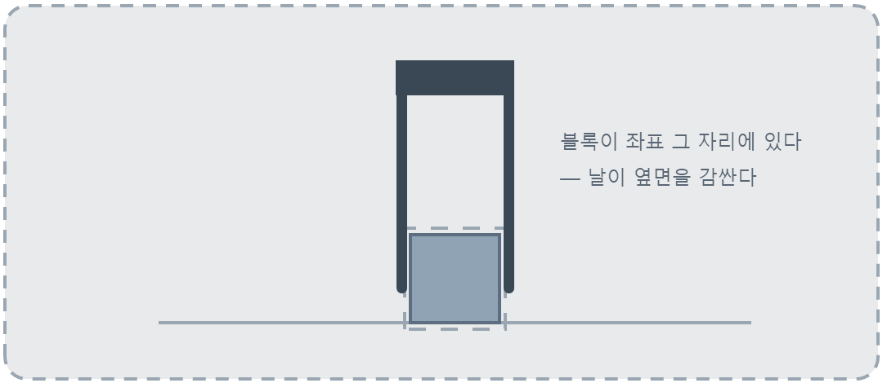
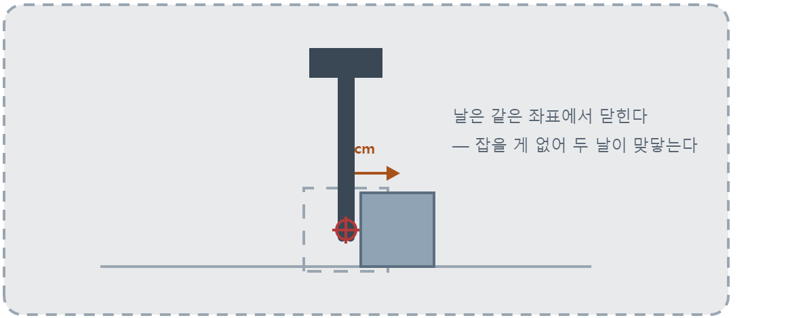
성공
같은 코드, 실패
오늘 우리는 집는 높이를 찾고, 대기 시간을 재고, 공통 기울기를 골랐다.
그 성공한 코드를 한 글자도 고치지 않고 — 블록만 1cm 옮기면 로봇은 허공을 집는다.
로봇은 블록이 어디 있는지 안 것이 아니다.
좌표를 사람이 적어 줬고, 블록이 그 좌표에 있어 준 덕에 성공했던 것이다.
정리
집기를 여섯 단계로 쪼갰더니 실패한 지점을 짚을 수 있게 됐다.
단계마다 숫자가 숨어 있었고, 그 숫자는 교과서가 아니라 실기기에서 잰 값이었다 — 1.5cm, 700ms.
숫자를 정하는 일은 좋은 값 하나를 찾는 일이 아니었다.
낮추면 잘 집히는 대신 멀리 못 간다 — 무엇을 얻고 무엇을 포기할지 고르는 일이었다.
그리고 아무리 잘 골라도 넘을 수 없는 선이 있었다 — E4 에서 E1 로는 코드로 옮길 수 없다.
다음 주제 — 세계를 고정한다.
먼저 블록을 정해진 위치(작업지도)에 고정하여 로봇이 동작하게 해보자.